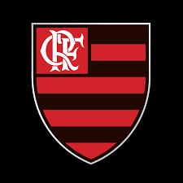

São Paulo

O São Paulo, conhecido como "Soberano", é considerado o maior clube do Brasil, tendo relevância mundial, tendo conquistado 3 Libertadores, 3 Mundiais, 6 Campeonatos Brasileiros e muito mais títulos.
Santos
O Santos, conhecido como "Peixe" é um dos maiores clubes do Brasil e do mundo, tendo conquistado 3 Libertadores, 2 Mundiais, 8 Campeonatos brasileiros e muito mais títulos. Além disso, o Santos é mundialmente conhecido por sua base que revela grandes estrelas, "Os meninos da Vila".
Flamengo
O Flamengo, conhecido como "Mengão", é considerado um dos maiores clubes do Brasil, tendo a maior torcida do Brasil, composta por cerca de 40 milhões de torcedores, tendo conquistado 3 Libertadores, 1 Mundial, 8 Campeonatos Brasileiros e muito mais títulos.
